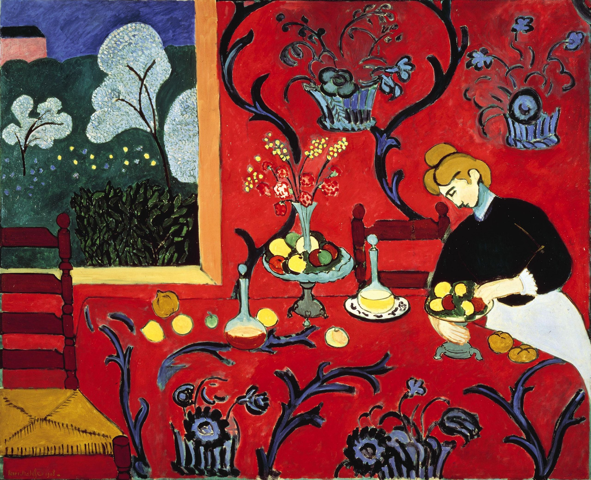
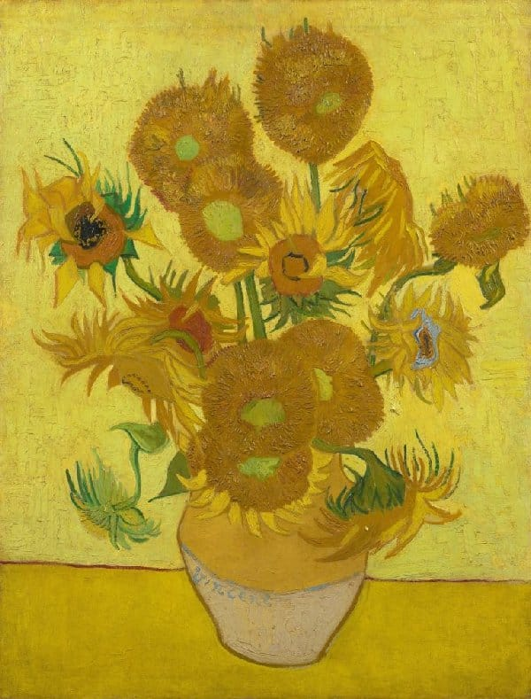
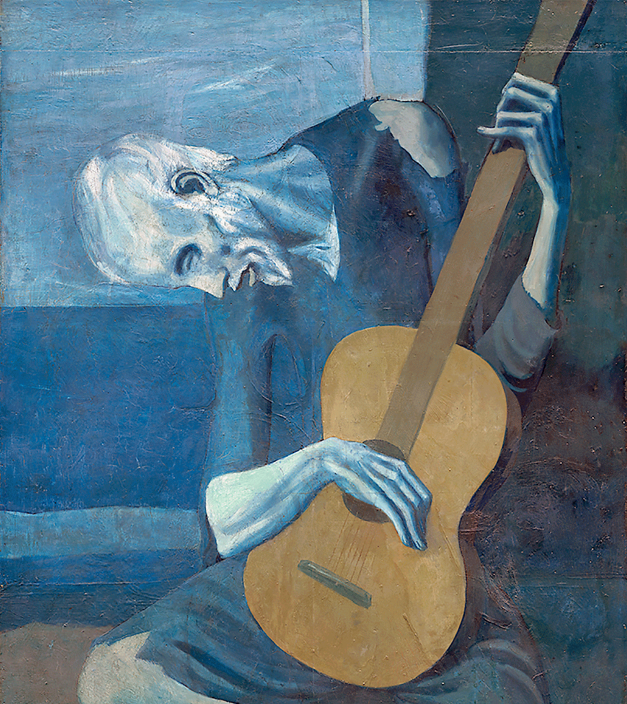

Personal Experience
Emotion, Color
and Mark
What color is an emotion?
A moment with art


Color is a language
Look. What do you feel?
What comes up?
Which emotions
are present right now?
After what you saw — what comes up?
First mark
Take a color that feels
right for your emotion.
Place one mark on the page.
Don't think about placement.
Expand
Add more marks.
Let them touch.
Move apart. Change.
Movement
Let the color move.
Spread. Stop. Mix.
Pause
Pause for a moment.
Look at what was created.
The painting doesn't
describe something.
It creates a feeling.